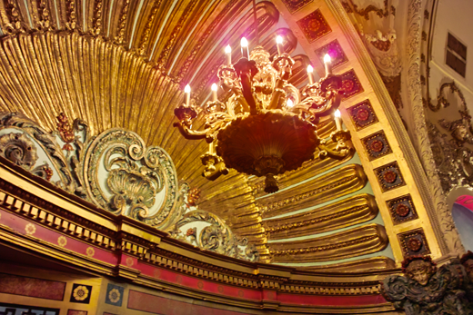

Welcome to the Empire Garden Restaurant!
History

The Empire Garden Restaurant has a grand long history standing as
it has been built and reigns for a long 108 years. It dates back all
the way to the 1960s when it was part of the "Combat Zone," an adult
entertainment district between Boylston and Kneeland Street. The restaurant
that belongs in that region was called the "Pussycat Theater," used
back in the early 70s. Due to the evolution of videography, it has now been
extinct and most of the chain theaters have faded away.
Despite of its provocative origins, the spacious theatre has its grandeur and
extravagance decors suitable for our clients to enjoy their meals. It
can seat up to 1000 customers and is very popular to events such as weddings,
birthday and all sorts of parties.
690 Washington Street, Boston MA 02111
Tel: (617) 482-8898 - Fax: (617) 482-6500
Tel: (617) 482-8898 - Fax: (617) 482-6500